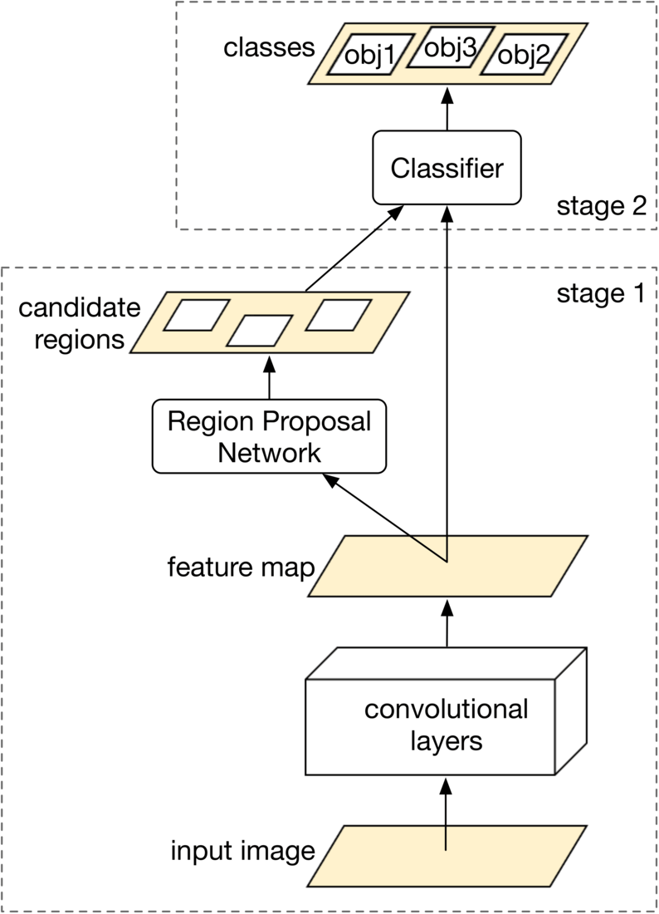
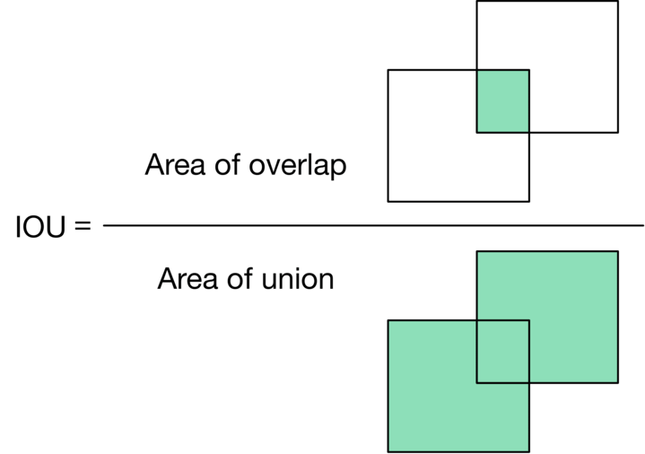

Google Street View Blurring System
Google Street View [1] is a technology in Google Maps that provides street-level interactive panoramas of many public road networks around the world. In 2008, Google created a system that automatically blurs human faces and license plates to protect user privacy. In this chapter, we design a blurring system similar to Google Street View.
![Image represents a street-level view of a residential driveway with two cars parked. A red SUV is parked on the left, and a white sedan is parked on the right. Both license plates are rectangular areas that have been intentionally blurred, indicated by white rectangular boxes overlaid on the image. White arrows point from these blurred license plate boxes to the text 'Blurred license plates' located at the bottom center of the image. The driveway is made of concrete, and a section of curb and a metal beam are visible in the foreground. A portion of a white picket fence is visible in the upper left corner, and a blue recycling bin is partially visible behind the white car. In the bottom right corner, there's a small compass-like icon and plus/minus buttons, suggesting the image is from a map application or similar platform allowing for zoom functionality.](images/ch03-google-street-view-blurring-system-img-11e8a00d.png)
Clarifying Requirements
Here's a typical conversation between a candidate and the interviewer.
Candidate: Is it fair to say the business objective of the system is to protect user privacy?
Interviewer: Yes.
Candidate: We want to design a system that detects all human faces and license plates in Street View images and blurs them before displaying them to users. Is that correct? Can I assume users can report images that are not correctly blurred?
Interviewer: Yes, those are fair assumptions.
Candidate: Do we have an annotated dataset for this task?
Interviewer: Let's assume we have sampled 1 million images. Human faces and license plates are manually annotated in those images.
Candidate: The dataset may not contain faces from certain racial profiles, which may cause a bias towards certain human attributes such as race, age, gender, etc. Is that a fair assumption?
Interviewer: Great point. For simplicity, let's not focus on fairness and bias today.
Candidate: My understanding is that latency is not a big concern, as the system can detect objects and blur them offline. Is that correct?
Interviewer: Yes. We can display existing images to users while new ones are being processed offline.
Let's summarize the problem statement. We want to design a Street View blurring system that automatically blurs license plates and human faces. We are given a training dataset of 1 million images with annotated human faces and license plates. The business objective of the system is to protect user privacy.
Frame the Problem as an ML Task
In this section, we frame the problem as an ML task.
Defining the ML objective
The business objective of this system is to protect user privacy by blurring visible license plates and human faces in Street View images. But protecting user privacy is not an ML objective, so we need to translate it into an ML objective that an ML system can solve. One possible ML objective is to accurately detect objects of interest in an image. If an ML system can detect those objects accurately, then we can blur the objects before displaying the images to users.
Throughout this chapter, we use "objects" instead of "human faces and license plates" for conciseness.
Specifying the system's input and output
The input of an object detection model is an image with zero or multiple objects at different locations within it. The model detects those objects and outputs their locations. Figure 3.2 shows an object detection system, along with its input and output.
![Image represents a simple object detection system. The input is a rectangular box containing three cartoon images: a brown and white dog's head at the top, a golden retriever-like dog below and to the left, and a grey cat holding a flower in a vase to the right of the golden retriever. A directed arrow connects this input box to a rectangular box labeled 'Object detection,' indicating that the input images are fed into the object detection process. Another directed arrow extends from the 'Object detection' box to an output box. This output box displays the results of the object detection: a framed image of the brown and white dog's head with the label '96% dog,' a framed image of the golden retriever with the label '89% dog,' and a framed image of the cat with the label '84% cat,' indicating the system's confidence level in identifying each object. The arrangement shows the flow of information from input images through the object detection process to the classified output with associated confidence scores.](images/ch03-google-street-view-blurring-system-img-c8e1b71d.png)
Choosing the right ML category
In general, an object detection system has two responsibilities:
- Predicting the location of each object in the image
- Predicting the class of each bounding box (e.g., dog, cat, etc.)
The first task is a regression problem since the location can be represented by (x,y) coordinates, which are numeric values. The second task can be framed as a multi-class classification problem.
Traditionally, object detection architectures are divided into one-stage and two-stage networks. Recently, Transformer-based architectures such as DETR [2] have shown promising results, but in this chapter, we mainly explore two-stage and one-stage architectures.
Two-stage networks
As the name implies, two separate models are used in two-stage networks:
-
Region proposal network (RPN): scans an image and proposes candidate regions that are likely to be objects.
-
Classifier: processes each proposed region and classifies it into an object class.
Figure 3.3 shows these two stages.
![Image represents a three-stage process demonstrating image classification. The first stage shows a cartoon dog, a cartoon house, a cartoon smiling dog, and a cartoon cat holding a carrot next to a flower. Arrows labeled 'stage 1' indicate a transition to the second stage. Stage two shows the same images, but now each is enclosed within a black square border. Arrows labeled 'stage 2' then lead to the third stage. The third stage displays the same images within black squares, but now each image is labeled textually beneath its square: the dog images are labeled 'Dog,' the house image is labeled 'House,' and the cat image is labeled 'Cat.' The overall flow demonstrates a progression from raw images, to images prepared for processing (boxed), and finally to images with assigned class labels, illustrating a basic image classification pipeline.](images/ch03-google-street-view-blurring-system-img-cd849158.png)
Commonly used two-stage networks include: R-CNN [3], Fast R-CNN [4], and FasterRCNN [5].
One-stage networks
In these networks, both stages are combined. Using a single network, bounding boxes and object classes are generated simultaneously, without explicit detection of region proposals. Figure 3.4 shows a one-stage network.
![Image represents a simple illustration of an image classification process. The left side shows input images: a brown and white dog's head, a light blue house, a golden retriever-like dog, and a grey cat holding a flower in a vase. A thick arrow points right, indicating data flow to the right side. The right side displays the output of a classification system, organized in a grid. Each input image is shown again, enclosed in a black box, and labeled below with its corresponding class: the two dog images are labeled 'Dog,' the house image is labeled 'House,' and the cat image is labeled 'Cat.' The arrangement visually demonstrates how the system takes multiple input images and assigns each to a specific category based on its visual features.](images/ch03-google-street-view-blurring-system-img-d8a2474e.png)
Commonly used one-stage networks include: YOLO [6] and SSD [7] architectures.
One-stage vs. two-stage
Two-stage networks comprise two components that run sequentially, so they are usually slower, but more accurate.
In our case, the dataset contains 1 million images, which is not huge by modern standards. This indicates that using a two-stage network doesn't increase the training cost excessively. So, for this exercise, we start with a two-stage network. When training data increases or predictions need to be made faster, we can switch to one-stage networks.
Data Preparation
Data engineering
In the Introduction chapter, we discussed data engineering fundamentals. Additionally, it's usually a good idea to discuss the specific data available for the task at hand. For this problem, we have the following data available:
- Annotated dataset
- Street View images
Let's discuss each in more detail.
Annotated dataset
Based on the requirements, we have 1 million annotated images. Each image has a list of bounding boxes and associated object classes. Table 3.1 shows data points from the dataset:
| Image path | Objects | Bounding boxes |
| dataset/image1.jpg | human face human face license plate | [10,10,25,50] [120,180,40,70] [80,95,35,10] |
| dataset/image2.jpg | human face | [170,190,30,80] |
| dataset/image3.jpg | license plate human face | [25,30,210,220] [30,40,30,60] |
Table 3.1: A few data points from the annotated dataset
Each bounding box is a list of 4 numbers: top left X and Y coordinates, followed by the width and height of the object.
Street View images
These are the Street View images collected by the data sourcing team. The ML system processes these images to detect human faces and license plates. Table 3.2 shows the metadata of the images.
| Image path | Location (lat, lng) | Pitch, Yaw, Roll | Timestamp |
|---|---|---|---|
| tmp/image1.jpg | (37.432567, -122.143993) | (0,10,20) | 1646276421 |
| tmp/image2.jpg | (37.387843, -122.091086) | (0,10,-10) | 1646276539 |
| tmp/image3.jpg | (37.542081, -121.997640) | (10,-20,45) | 1646276752 |
Table 3.2: Metadata of Street View images
Feature engineering
During feature engineering, we first apply standard , such as resizing and normalization. After that, we increase the size of the dataset by using a data augmentation technique. Let's take a closer look at this.
Data augmentation
A technique called data augmentation involves adding slightly modified copies of original data, or creating new data artificially from the original. As the dataset size increases, the model is able to learn more complex patterns. This technique is especially useful when the dataset is imbalanced, as it increases the number of data points in minority classes.
A special type of data augmentation is image augmentation. Among the commonly used augmentation techniques are:
- Random crop
- Random saturation
- Vertical or horizontal flip
- Rotation and/or translation
- Affine transformations
- Changing brightness, saturation, or contrast
Figure 3.5 shows an image with various data augmentation techniques applied to it.
![Image represents a grid showcasing various data augmentation techniques applied to a single image of a lion. The top row displays the original lion image and its horizontal and vertical flips. The second row shows the image rotated by +90, -90, and +60 degrees respectively. The third row demonstrates resizing (reducing the image dimensions from 500x500 to 100x100 pixels), rescaling (reducing the resolution by a factor of 10:1), and cropping a section of the original image. Finally, the bottom row illustrates adjustments to brightness (making the image brighter), darkness (making the image darker), and the addition of noise to the image, resulting in a grainy appearance. Each image is clearly labeled with the applied transformation, providing a visual comparison of the original image and its augmented versions.](images/ch03-google-street-view-blurring-system-img-cbeb828f.png)
It is important to note that with certain types of augmentations, the ground truth bounding boxes also need to be transformed. For example, when rotating or flipping the original image, the ground truth bounding boxes must also be transformed.
Data augmentation is used in offline or online forms.
-
Offline: Augment images before training
-
Online: Augment images on the fly during training
Online vs. offline: In offline data augmentation, training is faster since no additional augmentation is needed. However, it requires additional storage to store all the augmented images. While online data augmentation slows down training, it does not consume additional storage.
The choice between online and offline data augmentation depends upon the storage and computing power constraints. What is more important in an interview is that you talk about different options and discuss trade-offs. In our case, we perform offline data augmentation.
Figure 3.6 shows the dataset preparation flow. With preprocessing, images are resized, scaled, and normalized. With image augmentation, the number of images is increased. Let's say the number increases from 1 million to 10 million.
![Image represents a data processing pipeline for machine learning. The pipeline begins with a cylindrical database labeled 'Original dataset,' representing the raw input data. An arrow points from this database to a rectangular box labeled 'Preprocessing,' indicating that the original dataset undergoes a preprocessing step. The output of the preprocessing stage is then fed into another rectangular box labeled 'Augmentation,' where data augmentation techniques are applied. Finally, an arrow connects the augmentation stage to another cylindrical database labeled 'Preprocessed dataset,' representing the final, processed data ready for use in a machine learning model. The arrows visually depict the unidirectional flow of data through the pipeline, transforming the raw data into a preprocessed and augmented form.](images/ch03-google-street-view-blurring-system-img-150d55fe.png)
Model Development
Model selection
As mentioned in the "Frame the Problem as an ML Task" section, we opt for two-stage networks. Figure 3.7 shows a typical two-stage architecture.

Let's examine each component.
Convolutional layers
Convolutional layers [9] process the input image and output a feature map.
Region Proposal Network (RPN)
RPN proposes candidate regions that may contain objects. It uses neural networks as its architecture and takes the feature map produced by convolutional layers as input and outputs candidate regions in the image.
Classifier
The classifier determines the object class of each candidate region. It takes the feature map and the proposed candidate regions as input, and assigns an object class to each region. This classifier is usually based on neural networks.
In ML system design interviews, you are generally not expected to discuss the architecture of these neural networks.
Model training
The process of training a neural network usually involves three steps: forward propagation, loss calculation, and backward propagation. Readers are expected to be familiar with these steps, but for more information, see [10]. In this section, we discuss the loss functions commonly used to detect objects.
An object detection model is expected to perform two tasks well. First, the bounding boxes of the objects predicted should have a high overlap with the ground truth bounding boxes. This is a regression task. Second, the predicted probabilities for each object class should be accurate. This is a classification task. Let's define a loss function for each.
Regression loss: This loss measures how aligned the predicted bounding boxes are with the ground truth bounding boxes. We use standard regression loss functions, such as Mean Squared Error (MSE) [11], and denote it by Lreg :
Lreg=M1i=1∑M[(xi−x^i)2+(yi−y^i)2+(wi−w^i)2+(hi−h^i)2]Where:
- M : total number of predictions
- xi : ground truth top left x coordinate
- x^i : predicted top left x coordinate
- yi : ground truth top left y coordinate
- y^i : predicted top left y coordinate
- wi : ground truth width
- w^i: predicted width
- hi : ground truth height
- h^i : predicted height
Classification loss: This measures how accurate the predicted probabilities are for each detected object. Here, we use a standard classification loss, such as log loss (crossentropy) [12] and denote it by Lcls :
Lcls=−M1i=1∑Mc=1∑Cyclogy^cWhere:
- M : total number of detected bounding boxes
- C : total number of classes
- yi : ground truth label for detection i
- y^i: predicted class label for detection i
To define a final loss that measures the model's overall performance, we combine the classification loss and regression loss weighted by a balancing parameter λ :
L=Lcls+λLreg
Evaluation
During an interview, it is crucial to discuss how to evaluate an ML system. The interviewer usually wants to know which metrics you'd choose and why. This section describes how object detection systems are usually evaluated, and then selects important metrics for offline and online evaluations.
An object detection model usually needs to detect N different objects in an image. To measure the overall performance of the model, we evaluate each object separately and then average the results.
Figure 3.8 shows the output of an object detection model. It shows both the ground truth and detected bounding boxes. As shown, the model detected 6 bounding boxes, while we only have two instances of the object.
![Image represents a visual comparison of object detection results against ground truth within an image. The large square represents the image itself. Inside, solid-line rectangles represent the ground truth bounding boxes, indicating the actual locations of objects within the image. Dashed-line rectangles represent the detected bounding boxes, showing the locations predicted by an object detection model. Some detected boxes accurately overlap with ground truth boxes, indicating correct detections. Others are either misaligned or entirely missing, representing false positives (detections where no object exists) or false negatives (missed objects). The top of the image includes a legend: a solid rectangle labeled 'Ground truth' and a dashed rectangle labeled 'Detected,' clarifying the meaning of the different bounding box styles. The arrangement shows the spatial relationship between the model's predictions and the actual object locations within the image, allowing for a visual assessment of the model's performance.](images/ch03-google-street-view-blurring-system-img-1ed75762.png)
When is a predicted bounding box considered correct? To answer this question, we need to understand the definition of Intersection Over Union.
Intersection Over Union (IOU): IOU measures the overlap between two bounding boxes. Figure 3.9 shows a visual representation of IOU.

IOU determines whether a detected bounding box is correct. An IOU of 1 is ideal, indicating the detected bounding box and the ground truth bounding box are fully aligned. In practice, it's rare to see an IOU of 1 . A higher IOU means the predicted bounding box is more accurate. An IOU threshold is usually used to determine whether a detected bounding box is correct (true positive) or incorrect (false positive). For example, an IOU threshold of 0.7 means any detection that has an overlap of 0.7 or higher with a ground truth bounding box, is a correct detection.
Now we know what IOU is and how to determine correct and incorrect bounding box predictions, let's discuss metrics for offline evaluation.
Offline metrics
Model development is an iterative process. We use offline metrics to quickly evaluate the performance of newly developed models. Here are some metrics that might be useful for the object detection system:
- Precision
- Average precision
- Mean average precision
Precision
This is the fraction of correct detections among all detections across all images. A high precision value shows the system's detections are more reliable.
Precision = Total detections Correct detections In order to calculate precision, we need to pick an IOU threshold. Let's use an example to better understand this. Figure 3.10 shows a set of ground truth bounding boxes and detected bounding boxes, with their respective IOUs.
![Image represents a visualization of object detection results, comparing detected bounding boxes (dashed lines) against ground truth bounding boxes (solid lines) within an image labeled 'Image X'. The diagram shows several pairs of boxes; each pair consists of a detected box and a corresponding ground truth box. The intersection over union (IOU) score, a metric representing the overlap between the detected and ground truth boxes, is displayed for each pair. Higher IOU values (e.g., 0.85, 0.71) indicate better detection accuracy, while lower values (e.g., 0.13, 0.0) suggest poor detection. One pair shows a perfect match (IOU: 0.85), another shows a partial match (IOU: 0.71), one shows a very poor match (IOU: 0.13), and two pairs show no overlap (IOU: 0.0). A final pair shows a moderate overlap (IOU: 0.55). The legend clearly distinguishes between 'Detected' (dashed boxes) and 'Ground truth' (solid boxes).](images/ch03-google-street-view-blurring-system-img-3b2279e3.png)
Let's calculate precision for three different IOU thresholds: 0.7, 0.5, and 0.1.
- IOU threshold =0.7 Out of the six total detections, two have an IOU above 0.7. Therefore, we have two correct predictions at this threshold. Precision 0.7= Total detections Correct detections =62=0.33
- IOU threshold =0.5 At this threshold, we have three detections with IOU above 0.5 : Precision 0.5= Total detections Correct detections =63=0.5
- IOU threshold =0.1 This time, we have four correct detections: Precision 0.1= Total detections Correct detections =64=0.67
As you may have noticed, the primary disadvantage of this metric is that precision varies with different IOU thresholds. Therefore, it's difficult to understand the model's overall performance by looking at a precision score with a particular IOU threshold. Average precision addresses this limitation.
Average Precision (AP) This metric computes precision across various IOU thresholds and calculates their average. The AP formula is:
AP=∫01P(r)drWhere P(r) is the precision at IOU threshold r.
The above formula can be approximated by a discrete summation over a predefined list of thresholds. For example, in the pascal VOC2008 benchmark [13], the AP is calculated across 11 evenly-spaced threshold values.
AP=111n=0∑n=10P(n)AP summarizes the model's overall precision for a specific object class (e.g., human faces). To measure the model's overall precision across all object classes (e.g., human faces and license plates), we need to use mean average precision.
Mean average precision (mAP) This is the average of AP across all object classes. This metric summarizes the model's overall performance. Here is the formula:
mAP=C1c=1∑CAPcWhere C is the total number of object classes the model detects.
The mAP metric is commonly used to evaluate object detection systems. To find out which thresholds are used in standard benchmarks, refer to [14] [15].
Online metrics
According to the requirements, the system needs to protect the privacy of individuals. One way to measure this is to count the number of user reports and complaints. We can also rely on human annotators to spot-check the percentage of incorrectly blurred images. Other metrics that measure bias and fairness are also critical. For example, we want to blur human faces equally well across different races and age groups. But measuring bias, as stated in the requirements, is out of the scope.
To conclude the evaluation section, we use mAP and AP as our offline metrics. mAP measures the overall precision of the model, while AP gives us insight into the precision of the model in particular classes. The main metric of the online evaluation is "user reports."
Serving
In this section, we first talk about a common problem that may occur in object detection systems: overlapping bounding boxes. Next, we propose an overall ML system design.
Overlapping bounding boxes
When running an object detection algorithm on an image, it is very common to see bounding boxes overlap. This is because the RPN network proposes various highly overlapping bounding boxes around each object. It is important to narrow down these bounding boxes to a single bounding box per object during inference.
A widely used solution is an algorithm called “Non-maximum suppression” (NMS) [16]. Let’s examine how it works.
NMS
NMS is a post-processing algorithm designed to select the most appropriate bounding boxes. It keeps highly confident bounding boxes and removes overlapping bounding boxes. Figure 3.11 shows an example.
![Image represents a schematic illustrating the effect of Non-Maximum Suppression (NMS) in object detection. The diagram is divided into three sections. The leftmost section, labeled 'Before NMS,' shows two objects: a dog and a house. Each object is surrounded by multiple overlapping bounding boxes, represented by nested squares of varying sizes, indicating multiple detection predictions for the same object. The middle section shows a simple arrow labeled 'NMS,' representing the application of the NMS algorithm. The rightmost section, labeled 'After NMS,' displays the same dog and house but with only one bounding box around each, demonstrating that NMS has suppressed the redundant, overlapping bounding boxes, leaving only the most confident or highest-scoring prediction for each object. The process effectively refines the object detection results by eliminating duplicate detections.](images/ch03-google-street-view-blurring-system-img-f82eb786.png)
NMS is a commonly asked algorithm in ML system design interviews, so you're encouraged to have a good understanding of it [17].
ML system design
As illustrated in Figure 3.12, we propose an ML system design for the blurring system.
![Image represents a machine learning system design for blurring street view images based on user reports. The system is divided into two main pipelines: a data pipeline and a batch prediction pipeline. The data pipeline starts with an 'Original dataset' and a 'Hard dataset' (likely containing difficult-to-blur images) which undergo 'Preprocessing'. The 'Hard dataset' is obtained through 'Hard negative mining' from a 'Kafka' stream. The preprocessed data then undergoes 'Augmentation' before being stored as a 'Preprocessed dataset'. This dataset feeds into 'Model training', which produces an 'ML model'. The batch prediction pipeline begins with a 'User' providing latitude and longitude coordinates via a 'Fetching Service' to retrieve 'Raw Street View Images'. These images are then 'Preprocessed', passed through a 'Blurring service' guided by the 'ML model', and finally undergo 'NMS' (Non-Maximum Suppression, likely for removing redundant blur regions) before being stored as 'Blurred Street View Images' in the 'Serving' component. The 'Street view data sourcing team' is responsible for providing the initial 'Raw Street View Images' to the system. The entire system processes user reports (images) to identify areas requiring blurring in street view images.](images/ch03-google-street-view-blurring-system-img-9f79d58c.png)
Let's examine each pipeline in more detail.
Batch prediction pipeline
Based on the requirements gathered, latency is not a big concern because we can display existing images to users while new ones are being processed. Since instant results are not required, we can utilize batch prediction and precompute the object detection results.
Preprocessing Raw images are preprocessed by this component. This section does not discuss the preprocess operations as we have already discussed them in the feature engineering section.
Blurring service This performs the following operations on a Street View image:
- Provides a list of objects detected in the image.
- Refines the list of detected objects using the NMS component.
- Blurs detected objects.
- Stores the blurred image in object storage (Blurred Street View images).
Note that the preprocessing and blurring services are separate in the design. The reason is preprocessing images tends to be a CPU-bound process, whereas blurring service relies on GPU. Separating these services has two benefits:
- Scale the services independently based on the workload each receives.
- Better utilization of CPU and GPU resources.
Data pipeline
This pipeline is responsible for processing users' reports, generating new training data, and preparing training data to be used by the model. Data pipeline components are mostly self-explanatory. Hard negative mining is the only component that needs more explanation.
Hard negative mining. Hard negatives are examples that are explicitly created as negatives out of incorrectly predicted examples, and then added to the training dataset. When we retrain the model on the updated training dataset, it should perform better.
Other Talking Points
If time allows, here are some additional points to discuss:
- How Transformer-based object detection architectures differ from one-stage or twostage models, and what are their pros and cons [18].
- Distributed training techniques to improve object detection on a larger dataset [19] [20].
- How General Data Protection Regulation (GDPR) in Europe may affect our system [21].
- Evaluate bias in face detection systems [22] [23].
- How to continuously fine-tune the model [24].
- How to use active learning [25] or human-in-the-loop ML [26] to select data points for training.
References
- Google Street View. https://www.google.com/streetview.
- DETR. https://github.com/facebookresearch/detr.
- RCNN family. https://lilianweng.github.io/posts/2017-12-31-object-recognition-part-3.
- Fast R-CNN paper. https://arxiv.org/pdf/1504.08083.pdf.
- Faster R-CNN paper. https://arxiv.org/pdf/1506.01497.pdf.
- YOLO family. https://pyimagesearch.com/2022/04/04/introduction-to-the-yolo-family.
- SSD. https://jonathan-hui.medium.com/ssd-object-detection-single-shot-multibox-detector-for-real-time-processing-9bd8deac0e06.
- Data augmentation techniques. https://www.kaggle.com/getting-started/190280.
- CNN. https://en.wikipedia.org/wiki/Convolutional_neural_network.
- Forward pass and backward pass. https://www.youtube.com/watch?v=qzPQ8cEsVK8.
- MSE. https://en.wikipedia.org/wiki/Mean_squared_error.
- Log loss. https://en.wikipedia.org/wiki/Cross_entropy.
- Pascal VOC. http://host.robots.ox.ac.uk/pascal/VOC/voc2008/index.html.
- COCO dataset evaluation. https://cocodataset.org/#detection-eval.
- Object detection evaluation. https://github.com/rafaelpadilla/Object-Detection-Metrics.
- NMS. https://en.wikipedia.org/wiki/NMS.
- Pytorch implementation of NMS. https://learnopencv.com/non-maximum-suppression-theory-and-implementation-in-pytorch/.
- Recent object detection models. https://viso.ai/deep-learning/object-detection/.
- Distributed training in Tensorflow. https://www.tensorflow.org/guide/distributed_training.
- Distributed training in Pytorch. https://pytorch.org/tutorials/beginner/dist_overview.html.
- GDPR and ML. https://www.oreilly.com/radar/how-will-the-gdpr-impact-machine-learning.
- Bias and fairness in face detection. http://sibgrapi.sid.inpe.br/col/sid.inpe.br/sibgrapi/2021/09.04.19.00/doc/103.pdf.
- AI fairness. https://www.kaggle.com/code/alexisbcook/ai-fairness.
- Continual learning. https://towardsdatascience.com/tag/fine-tuning/.
- Active learning. https://en.wikipedia.org/wiki/Active_learning_(machine_learning).
- Human-in-the-loop ML. https://arxiv.org/pdf/2108.00941.pdf.
Additional figures: